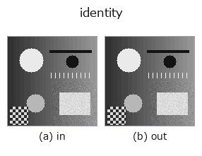

misc op• 資料種類:any → any
• 呼叫:fullseye.apply(img, "identity", a=0.5, b=0.5)(2-D 的模型是一張圖 + 兩個純量旋鈕 a,b∈[0,1])
• HALCON 對應:copy_image(其含義與參數可參考 HALCON 手冊)

*圖為在 128×128 合成輸入上實際執行的輸出。左為輸入，右為輸出(非影像的回傳值直接顯示其值)。*
恆等映射。對應到 HALCON 的 `copy_image（Copy an image and allocate new memory for it.），但與配置新記憶體並複製影像的 copy_image` 不同，本實作只是原樣傳回輸入陣列（不進行複製）。
> 以下的詳細說明為原文 —— 摘要與標題已翻譯。
`a, b は未使用。sort が ANY`（image/region/feature いずれの入力にも一致）なのはこの op だけの特別扱いで、パイプラインの型を変えずに「何もしない」スロットを置くために使う（進化がスロット数を埋めたいだけのとき等）。値を作り直さず入力をそのまま返すため、呼び出し側で戻り値を書き換えると入力の配列も一緒に変わる点に注意。
• 範例資料目錄(下載 URL / 授權) —— 2-D 用 skimage.data(BSD/公有領域)加合成圖,3-D 給出真實資料源(Stanford/PDS 等)的下載 URL。
• 運算子來歷與參考文獻 —— 該運算子族所依據的研究/方法出處。
下面的程式已確認可以執行(與圖相同的輸入)。在 Studio 說明中，此區塊會變成按鈕，可當場載入並執行。
identity 0.50 0.50
▸ Load this pipeline · Load & run
• (尚無)
any 作為輸入)gaussian · mean_box · bilateral · unsharp · median · min_filter · max_filter · percentile
misc)—
*Provenance: ops.py — 2D 運算子登記表。本條目由 tools/opdocs.py md 自動產生(請勿手動編輯)。*
© 2026 Kazufumi Furuse — Fullseye operator documentation. Licensed under Apache-2.0.